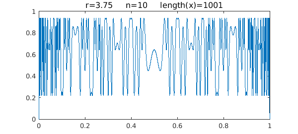
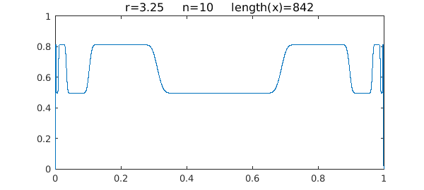
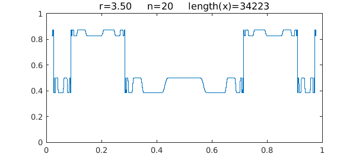

1. Chaos
The logistic map is the iteration
$$ x_{n+1} = r x_n (1-x_n), $$
where $r$ is a parameter in the interval $[0,4]$. An earlier Example called "The logistic map and chaos" looked at the behavior of this function for fixed $x_0$ as a function of $r$. Here we do the reverse: fix $r$ and vary $x_0$. The situation was considered previously in [1].
The interesting behavior happens for $r\in [3,4]$ -- the famous phenomenon of period doubling to chaos. Let's begin with the chaos, which you see, for example, for $r=3.75$. Here is what happens after ten iterations of the map:
tic
r = 3.75;
x0 = chebfun('x',[0 1]);
n = 10;
x = x0;
for k = 1:n, x = r*x.*(1-x); end
LW = 'linewidth'; FS = 'fontsize';
plot(x,LW,1)
ss = sprintf('r=%4.2f n=%d length(x)=%d', r, n, length(x));
title(ss,FS,12)
axis([0 1 0 1])

Note that the length of the chebfun is slightly less than the mathematically exact value of $1025$. This appears to be due to an aliasing phenomenon, but we won't explore that here.
2. Period 2
Here is the same plot except for $r=3.25$, where this dynamical system is of period 2:
r = 3.25;
x = x0;
for k = 1:n, x = r*x.*(1-x); end
plot(x,LW,1)
ss = sprintf('r=%4.2f n=%d length(x)=%d', r, n, length(x));
title(ss,FS,12)
axis([0 1 0 1])

One can see that $x$ takes essentially just 2 values. If we truncate the interval a little bit to avoid the complexity at the edges, then Chebfun can take 20 steps without difficulty:
n = 20;
x0 = chebfun('x',[.02 .98]);
x = x0;
for k = 1:n, x = r*x.*(1-x); end
plot(x,LW,1)
ss = sprintf('r=%4.2f n=%d length(x)=%d', r, n, length(x));
title(ss,FS,12)
axis([0 1 0 1])
Here are the two limiting values:
x(0.5), x(0.8)
ans = 0.495265168245309 ans = 0.812427139446746
Can you compute these analytically, or semi-analytically using Chebfun roots?
3. Period 4
For $r=3.5$, the system has period 4:
r = 3.5;
x = x0;
for k = 1:n, x = r*x.*(1-x); end
plot(x,LW,1)
ss = sprintf('r=%4.2f n=%d length(x)=%d', r, n, length(x));
title(ss,FS,12)
axis([0 1 0 1])

Here are the four limiting values, which again you may be able to compute with roots:
x(0.5), x(0.62), x(0.77), x(0.83)
ans = 0.500884210319826 ans = 0.382819683209624 ans = 0.874997263532565 ans = 0.826940706746559
Time for this example:
toc
Elapsed time is 4.831787 seconds.
Reference
- R. B. Platte and L. N. Trefethen, Chebfun: A new kind of numerical computing, in A. D. Fitt, et al., Progress in Industrial Mathematics at ECMI 2008, Springer, 2010.